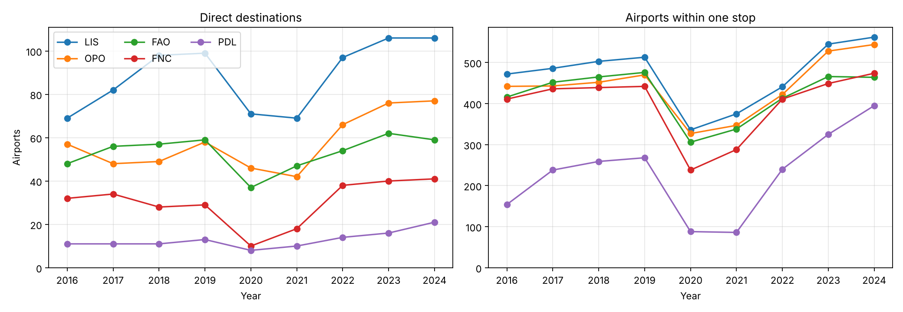

Problem and motivation
Tourism, the islands and the diaspora make air links strategic for Portugal. Airport operators, tourism boards and airline planners need to know how well connected each Portuguese airport is, which hubs that connectivity relies on and where the passengers are and where demand is heading. The first is a graph problem, the second a time-series problem; we answer both in one lakehouse.
Data: official Eurostat statistics only
- Route declarations of 35 countries, 2016 to 2024: passengers, seats and flights of every main route, by direction (145,912 reports, reconciled into 101,398 airport-to-airport flows).
- Monthly traffic of 496 European airports, January 2016 to 2026 (April 2026 for Portugal), split in national and international passengers.
- Monthly routes of the Portuguese airports, 2016 to 2024; a public airport registry for names and coordinates.
Solution
One Databricks notebook that follows the course pipeline: 49 files in a Unity Catalog Volume; Bronze (data rules, Parquet), Silver (business rules, Delta) and Gold (aggregates, Delta); Spark SQL; graph analytics written with DataFrames (degrees, motif, subgraph, breadth-first search, PageRank); Structured Streaming with checkpoints; Delta MERGE and time travel.
Why Spark. Itineraries are joins of the route table with itself: the 12,473 routes of 2024 become 922,420 one-stop itineraries, and 1.35 million two-stop itineraries from Portugal alone, with no sampling.
Veracity: what the data does not say by itself
- Each route between two reporting countries is declared twice. The two declarations differ by 0.5% in the median, and a rule keeps one.
- The United Kingdom stopped reporting in 2019: only a comparable panel of 33 countries is followed over time.
- Partners declared with region codes in 2019 would appear as new routes in 2024: 24 routes are labelled not comparable.
- 16 of 16 quality checks passed; streaming identical to batch (21,672 records); itinerary counts confirmed by an independent pandas computation.

Direct destinations and airports within one stop of the five main Portuguese airports, 2016 to 2024.
Findings
| Question | Answer |
|---|---|
| European network | 2024: 602 airports, 12,473 routes, 1.1 billion passengers. It lost 49% of its routes in 2020 and is now 8% above 2019. The 4% of airports with more than 100 destinations carry 45% of the passengers. |
| Reach of Portugal | Lisbon: 106 direct destinations, 94% of the network within one stop. Porto: 77 direct, 90% within one stop. A stop adds 5% to the distance (median). |
| Hubs | Istanbul alone is the best transfer for 20% of Lisbon's one-stop destinations (67% of those in Asia); five hubs for 48%. |
| Demand | Lisbon handles 49% of the passengers, Porto 23%. Busiest route: Lisbon - Madrid, 1.91 million. The 10 busiest routes carry 20%. |
| Routes 2019 to 2024 | 211 kept, 52 gained, 26 lost (including Moscow). |
| Seasonality 2025 | Busiest / quietest month: Faro 4.4, Ponta Delgada 2.8, Porto 1.9, Funchal 1.7, Lisbon 1.5. |
| Trend | Growth of 5.0% in 2025 and 3.7% in January to April 2026; still 19% below the pre-pandemic trend. |

Air passengers of Portugal per year, with two scenarios for 2030: 85.7 million (latest pace) and 90.1 million (pre-pandemic volume growth).
Recommendations
- Reduce the dependence on a single transfer hub: keep at least two gateways for each region of the world.
- Promote regional airports by one-stop reach: 90% of the network from Porto, 66% to 79% from Faro, Funchal and Ponta Delgada.
- Target winter demand in Faro and the Azores; Funchal shows that an island can be stable all year.
- Review the short domestic air routes: about 400,000 empty seats per direction a year on Lisbon - Porto and Lisbon - Faro.
- Plan capacity with a range, and for shocks; treat Lisbon's capacity limit separately.
Limitations
Route statistics end in 2024; only airport statistics reach 2026. The network covers routes with at least one airport in a reporting country, and only main routes. Itineraries are structural: schedules, prices and airlines are not in the data. The scenarios ignore capacity limits.